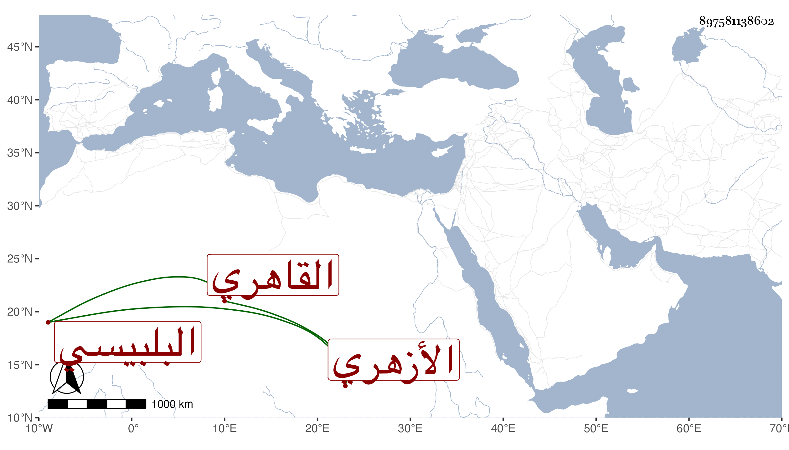

0902Sakhawi.DawLamic.ITO20230111-ara1.EIS1600.897581138602
Biography ID: 897581138602
1025
يحيى بن محمد بن علي بن أحمد بن عثمان بن عبد الرحمن بن عثمان الشرف ابن المحب البلبيسي الأصل القاهري الأزهري إمامه وابن أئمته والماضي أبوه وجده وجد أبيه . حفظ القرآن وجوده وأم نيابة عن أبيه ثم استقلالا ونوزع من جماعة من المجاورين لكونه قاصرا فبادر القاضي زكريا وحكم بصحة الصلاة خلفه ومنع من يتعرض له مراعاة لسلفه .
